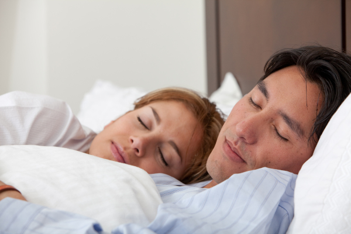

"Бонуси" хропіння
Що таке хропіння?
Коли ми вдихаємо та видихаємо, повітря рухається то до легень, то від них, проходячи шлях через наші верхні та нижні дихальні шляхи. Якщо повітря на своєму шляху зустрічає перепони, з'являються звуки. Чим більше перепон, тим більший тиск повітря, тим сильніше хропіння.
Які причини хропіння?
Насправді причин для виникнення отих осоружних звуків, може бути чимало: починаючи від закладеного носа, аденоїдів, поліпів, закінчуючи надмірною масою тіла. Прийом алкоголю перед сном, звичайно, трохи розслаблює, але це також відображається і на тонусі піднебіння, яке западає та змушує нас хропіти.
Може спричинювати таку втрату тонусу і часте недосипання. Окрім того, незручне положення голови під час сну також може частково перекривати дихальні шляхи та викликати хропіння.
Чим загрожує хропіння, окрім нервових розладів у тих, хто поруч?
Коли повітря потрапляє в легені із складнощами, то очікувано, що це може загрожувати гіпоксією та усім, що з нею пов'язано. Також хропіння – одне із явищ, що часто пов'язані із мігренню. Існує зв'язок між хропінням та підвищеним ризиком виникнення бляшок в сонних артеріях. А така штука – безпосередній фактор виникнення ішемічного інсульту та, відповідно, смерті чи багаторічного овочеподібного існування із примарними перспективами.
Коли нейрофізіологічні зміни у тканинах верхніх дихальних шляхів прогресують, іноді виникає так званий синдром обструктивного апное сну.
Що це означає? Людина під час сну на певний час перестає дихати. Че може тривати кілька секунд, а може і кілька їх десятків. Мозок не отримує кисню і коли його концентрація стає критичною, людина важко прокидається, знову починає дихати (а бува таке, що й не починає), засинає і все починається знову. Таких пробуджень за ніч може відбуватися дуже багато, вони короткі і ми їх не запам'ятовуємо. Однак це істотно позначається на якості нашого сну та самопочутті. Як наслідок – сонливість протягом дня, брак уважності за кермом, підвищення серцево-судинних ризиків.
Про ось ці серцево-судинні ризики – то не лише істотне підвищення шансів заробити інсульт, (до речі, автори цього дослідження піднімають питання про доцільність проходження такими пацієнтами скринінгових досліджень сонних артерій з метою запобігання виникнення інсульту), а й підвищення тиску та виникнення еректильної дисфункції.
При явищі синдрому обструктивного апное сну організм всю ніч в стресі, йому не до синтезу статевих гормонів, і, відповідно, концентрація ранкового тестостерону істотно падає: прощавай лібідо.
Дізнатися та вжити заходів!
Так, саме дізнатися стоїть на першому місці. Адже ми себе не чуємо, коли спимо. Для когось це привід для відвертої, але корисної для власного життя та здоров'я розмови з ближнім.
"А я не хроплю часом? А дихання в мене не зупиняється?" Якщо таке має місце і ближні зацікавлені у вашому довгому та щасливому існуванні, то вони неодмінно Вам про це розкажуть, та ще й супроводжуватимуть Вас до фахівця, щоб детально розповісти, як саме ви це робите.
Якщо затримки дихання (того самого синдрому обструктивного апное сну) не спостерігається, можна спробувати самотужки вжити заходів по зниженню проявів цього явища.
Уникаємо вживання алкоголю перед сном (бо це погіршує тонус верхніх дихальних шляхів);
Стараємося менше спати на спині і більше на боку (у такому положенні дихальні шляхи перекриватимуться з меншою ймовірністю);
Відмовляємося від куріння. (постійне подразнення тютюновим димом призводить до підвищеної секреції слизових оболонок і накопичення слизу, що також є перешкодою для руху повітря та отих самих звуків);
Якщо є потреба, працюємо над зниженням маси тіла (зменшення надмірних відкладень в області шиї неодмінно призведе до зменшення тиску на верхні дихальні шляхи);
Якщо є підозра на фізіолого-анатомічні зміни у верхніх дихальних шляхах (аденоїди, поліпи), або затяжні респіраторні негаразди , записуємося на огляд до ЛОРа.
Якщо є час та натхнення, можна спробувати виконання орофарингеальних вправ . Ось один з їх прикладів. А ліпше проконсультуватися із фахівцем, який порадить комплекс вправ, який буде ефективний саме для вас. До речі, ефективність вправ, що можуть укріпити м'язи гортані та покращити її тонус, підкріплена науковими дослідженнями.
Якщо ж перелічені заходи не змінюють ситуацію, або у вас спостерігаються затримки дихання, обов'язково відвідайте лікаря!
Здоров'я та гарного сну вам та вашим близьким!
